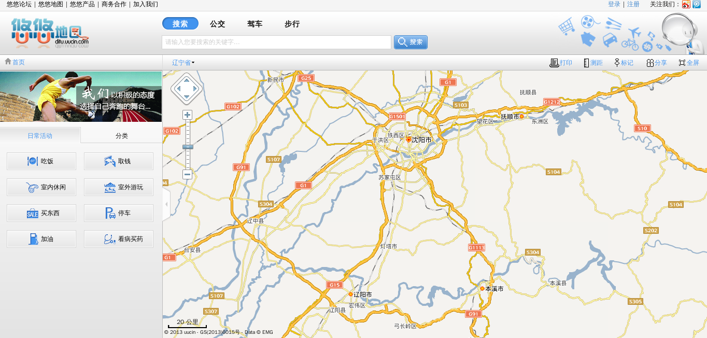
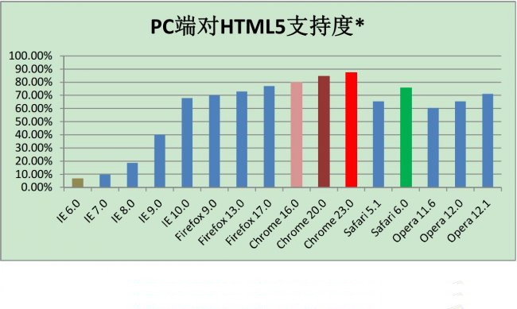
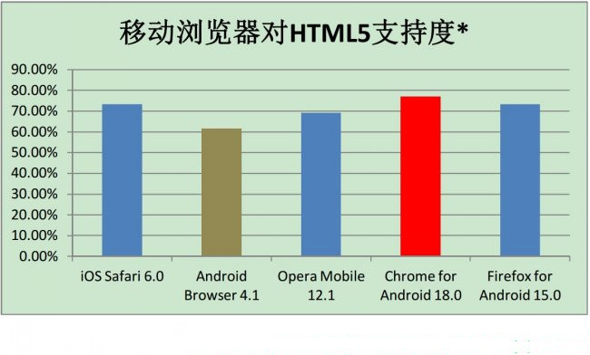
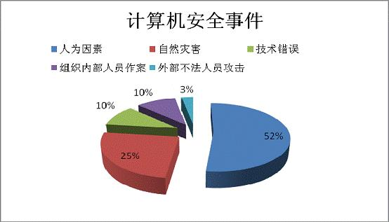

2013总结及2014发展规划
段洪义
2013年12月23日
2013年高新技术发展趋势呈现出互联性和移动性，随着智能手机的普及，大众都融入到移动互联网的浪潮之中。 移动互联网不是普通的互联网，他的本质是利用碎片时间让互联网以更为自然的方式融入生活的时时刻刻，方方面面。
作为一款与生活密切相关的位置服务软件，悠悠也有了长足的发展，值得高兴的是这期间我们很多员工开始理解开源、开始参与社区。 开始懂得在享受编程中快乐的工作，快乐的回家，这在沈阳这种工作条件并不太好的二线城市更加难能可贵的，这些都是我们悠悠发展的星星之火。
2013年技术车轮继续滚滚向前，从平民化的3D电影到工业革命2.0的3D打印机，3D技术已经普及到个体并正在进一步发展。 HTML5作为第五代超文本标记语言将成为互联网领域的新一代生力军。M2M、NFC、智能家电、大数据、云计算、4G技术、无人驾驶等技术开始引领业界潮流。
这一年，我们依然很忙；这一年，我们见证了进步；接下来我从技术方面总结2013展望2014。
uuboard平台上线
天下大事，分久必合，合久必分。作为一种服务资源整合的尝试，uuboard是一个综合性的LBS WEBSERVICE平台，其中包括:
- 符合OAUTH2规范的统一鉴权登录系统。
- 图片、语音等非结构化数据的云存储平台。
- 随心记、IM等功能的webservice接口。
- 收藏夹等半结构化数据的云存储平台。
uuboard是我们第一个应用自动化构建的服务，也是我们第一个使用业务监控系统的服务。
UU地图2.0上线

Superman项目
这是一个系统使用自动化运维工具的项目，悠悠第一个使用python做大数据分析的项目。 大数据分析框架从开始预研那天起就是为python语言准备的，其具有如下特点:
- 站在devops角度开发系统，利于运维。
- 使用自动化测试方法有利于重构。
- 半个小时以内分析数十亿条数据进行空间分析。
- 10分钟内完成上千万条数据的插入工作。
一个迟来的数据分析项目。由于当时我们的人员能力并不成熟，所以我们使用了HIVE以及Java做数据分析。
Stornado
2013年我们拥有了自己的机房；我们拥有了更多核心的CPU。 虽然基于协程的长连接在云虚拟主机上表现很完美，但是由于协程固有的一些特点使其并不能充分的利用多处理器以及多核心。 这样会导致系统资源的浪费。对此我们开发了长连接4，其对比长连接3的主要特点是：
- 仿照nginx方式在多进程下复用端口，充分利用多核多CPU。
- 采用session复用机制，对同一个用户复用连接提高响应速度。
- 加入用户识别机制，可以在未来支持导航功能收费服务。
关于名称的来历也很简单，Super Tornado简称stornado
UUsearch功能
我们的搜索功能一直做的不好，其中有很多的原因，有数据原因，也有算法原因。uusearch项目是我们在搜索功能上的一些尝试：
- 搜索功能上加入了同义词识别功能。
- 在搜索功能上增加了全国分组功能。
- 在搜索功能上我们加入了简单的编辑距离来识别语义。
- 采用连接池以及部分代码C语言化，来支持千万数据毫秒级排序。
很不幸的是，对搜索的理解，非搜索公司一般要比搜索公司差，这里面有基因的问题，搜索公司关注的是召回率与准确率，而非搜索公司关注的搜索式样与排序。这仅仅是一个开始，让我们期待一下uusearch2.0，它将会更加关注搜索本身。
虚拟化技术
虚拟化技术有助于企业提高IT资源的利用率，降低IT运维成本，同时也能提升企业的安全性。 虚拟化技术是当前云计算的热门技术之一。 在内网我们大部分服务器均是虚拟化技术生成的虚拟主机，带来的好处显而易见：
- 提高资源的使用效率，削减开支节约能源。
- 简化测试、开发、部署流程。
- 通过拷贝虚拟机文件映像来改进灾难恢复工作。
自动化运维
运维团队需要面对来自外界的海量数据和大并发的挑战，中间还要面对互联互通的网络考验。 后端不得不面对随着公司业务发展日益增多的服务器管理，包括上层各种应用的统一部署和调度。
- 使用salt来管理日益增多的服务器，统一应用部署。
- 使用zabbix对服务器基础环境进行监控。
- 使用deb包管理机制进行半自动化上下线及版本回退。
自动化构建系统
随着软件开发复杂度的不断提高，团队开发成员间如何更好地协同工作以确保软件开发的质量。 我们需要的不是CMMI，也不是复杂的流程，而是一些有责任的员工以及一个智能化的持续集成系统：
- 持续的软件版本发布，自动编译、分发、部署和测试项目。
- 一个基于git的的分布式代码管理环境。
- 一个无需太多的人工干预的自动化运维系统。
2013年结语
2014我们来了
关于运维

自动化运维系统
对于运维而言，自动化早已不是什么高端技能，而是每一个运维工程师都必须掌握的看家本领。 只有将更多的需要机器做的事情交给机器自己做，才能提高运维团队的工作效率，降低工作强度，从容应对各种挑战：
- 对现有的运维系统多个进行整合。
- 完善自动化运维工具使其能够去管理更多的硬件资源。
- 配置变更检测与管理自动化。
监控系统
随着悠悠业务的发展，服务器监控已经成为系统管理和运维的重要组成部分。 完善的监控系统是现代化运维的基本要求，如何有效地降低监控成本、提高效率是服务器监控的重要目标：
- 完善现有的硬件监控系统，尝试进行监控的资源整合。
- 统一的日志收集与处理系统来管理服务器日志。
- 故障定位系统来处理业务日志，为灰度发布做有力支撑。
关于云
云是网络、互联网的一种比喻说法
基础服务
基础服务和虚拟化是实现paas的基础，在2013年我们开发了大量的基础服务，并对System Software进行了系统的划分； 在2014年，我们将继续对系统资源进行深度整合：
- 继续对导航基础服务进行升级，剥离精简核心服务。
- 在运维硬件资源允许的条件下将虚拟化升级成iaas服务。
- 整合swift以及iaas服务，统一鉴权接口，提供租户支持。
位置搜索
到目前为止，非搜索公司做搜索还没有成功的，这里面有基因的问题。 这里我们举一个最简单的例子：搜索公司关注的是召回率与准确率，而非搜索公司关注的搜索式样与排序。 uusearch本身并不算太成功，它仅仅是将一些诸如同义词、编辑距离等搜索的理念带到了数据库检索。 由于其本身过度关注排序而忽略了搜索准确率，导致其难以实现分布式，cloudsearch试图解决这个问题：
- 采用对POI名称进行一元分词，兼容数据库检索。
- 引入词位检索功能，来避免一元切割造成的召回率高而准确率低的情况。
- 采用分布式结构来解决一元切分后导致的系统变慢问题。
- 尝试整合联想搜索功能。
悠悠云
越来越多的企业开始内部IT资源的整合，2014年将会诞生了很多的内部私有云； 而价格便宜的公有云依然是中小企业的最佳选择。 针对悠悠团队，2014年的初级目标是在硬件资源允许的情况下拥有自己的IAAS云，并在不远的未来发展自己的PAAS云。
- 简化新项目启动。
- 每个app开箱即用，方便部署与监控。
- 利于系统的持续集成。
- 无需人工干预，去中心化。
关于大数据
悠悠大数据容量图
大数据
我们可将大数据分析划分为：内存级、海量级两种类型，前者适合做实时分析，后者适合做海量数据分析。 目前我们的hadoop与python的架构搭配能够轻松应付海量级数据处理，2014年我们需要完善内存级数据处理。
- 使用hadoop2.0的yarn协议开发实时调度系统。
- 使用zookeeper来对内存处理数据进行实时容错。
- 基于共享内存技术，降低内存使用率。
关于WEB

HTML5
从产品角度来看，前端朝着多终端的方向发展，需要综合考虑 PC、Pad、Phone、TV 等各种用户终端的交互实现。 未来的产品形态，需要高性能跨终端的面向消费者的应用，也需要传统PC端面向商户的富应用。 向左是移动化，向右是富应用化，这两个方向都非常重要，对前端的挑战则各有不同。
- 向左走我们需要响应式web设计能力。
- 向右走我们需要富应用设计能力。
- 两边都需要拥有全局的思维以及模块化设计的能力。
PC HTML5

移动端HTML5

Web自动化测试与持续集成
Web应用因为其迭代周期短，需求变化快特殊性质，越来越多的Web开发团队在拥抱敏捷。同时随着前端技术tHtml5、Javascrip，等不断被推出和完善，Web应用也变得越来越复杂很绚丽。这都给我们的测试带来了挑战。
- 支持数据驱动。
- 对象库的分离和管理。
- 自动化测试脚本的组织和管理。
- 脚本的可重用和可配置。
- 支持同Jenkins的持续集成。
响应式设计
响应式Web设计(Responsive Web design)的理念是：页面的设计与开发应当根据用户行为以及设备环境(系统平台、屏幕尺寸、屏幕定向等)进行相应的响应和调整。
- 将一切弹性化。
- 熟练掌握div布局精髓。
- bootstrap、purecss、Topcoat、Markup...
关于团队
应用出现问题，是这样？
还是这样！
以Devops促进团队的相互融合
DevOps是一组过程、方法与系统的统称，用于促进开发、技术运营和质量保障部门之间的沟通、协作与整合。 它的出现是由于软件行业日益清晰地认识到：为了按时交付软件产品和服务，开发和运维工作必须紧密合作。
- 从敏捷开发到敏捷运维，重复的事情交给机器去做。
- 站在开发角度去运维，为开发提供好用的故障跟踪系统。
- 站在运维的角度去开发，让运维知道系统在干什么。
建立学习型团队
团队技术栈
关于信息安全

信息安全
互联网安全的问题，几乎是每个公司在成长过程中必然会面临的一个问题。 业务发展得越顺利，面临的安全威胁可能就会越大。 近年来知名公司被黑客攻击的事件层出不穷。 从CSDN被拖库，到Struts漏洞导致苹果开发者网站被入侵，安全问题就像悬在互联网公司头上的利剑，不知什么时候就会掉下来。 但大多数互联网公司对于处理安全问题并没有太多的经验，也缺乏相应的意识和方法。
- 完善入侵检测机制，在入侵的第一时间发出警报。
- 对敏感数据建立数据备份机制，一旦有问题及时恢复。
- 培养开发与运维人员信息安全意识，明确敏感数据范围。
关于设计
系统模块化
模块化是个一般概念，这一概念也适用于软件开发，可以让软件按模块单独开发，各模块通常都用一个标准化的接口来进行通信。 实际上，除了规模大小有区别外，面向对象语言中对象之间的关注点分离与模块化的概念基本一致。 通常，把系统划分为多个模块有助于将耦合减至最低，让代码维护更加简单。 多屏互动是未来APP所要具备的基本能力，功能合理拆分任意组合是完成多屏互动的必要技术，对此我们需要在技术上做好准备。
- 依赖最小化，避免交叉调用、各层次之间调用尽量使用接口。
- 可以使用Library方式将共用组件进行拆分。
- 可以使用诸如maven之类的工具对app library进行依赖管理。
- 可以考虑使用一些模块化的框架将应用插件化。
eclipse osgi、android-application-plug-ins-frame-work都是可以研究的对象
避免接口设计的坏味道
所有的坏味道都消失掉或者能够确认剩余的都是可接受的，我们就会停止，这会避免分析瘫痪。
- 僵化性：每个改动都会迫使许多对系统其他部分的其它改动。
- 脆弱性：对系统的改动会导致系统中和改动的地方在概念上无关的许多地方出现问题。
- 牢固性：很难解开系统的纠结，使之成为一些可在其他系统中重用的组件。
- 粘滞性：做正确的事情比做错误的事情要困难。
- 复杂性：设计中包含有不具任何直接好处的基础结构。
- 重复性：设计中包含有重复的结构，而该重复的结构本可以使用单一的抽象进行统一。
- 晦涩性：很难阅读、理解。没有很好地表现出意图。
什么是好的接口设计?
- 好的接口是职责单一的接口。
- 好的接口是看起来简单的接口。
- 好的接口是解决主要问题的接口。
- 好的接口是启发性的接口。
- 好的接口是对称的接口。
其他
2014世界很忙，我们关注如下与我们息息相关的词：
- 4G
- 多屏
- 万物互联
- 生物识别
- 近场通讯
- 云计算
- 3D打印